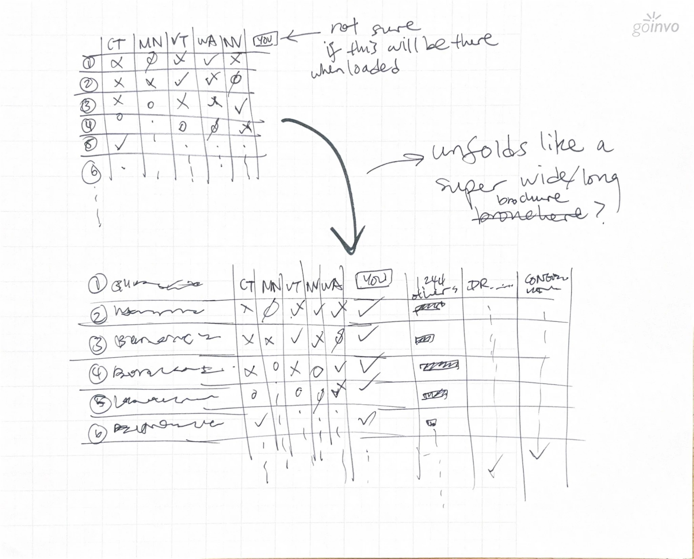
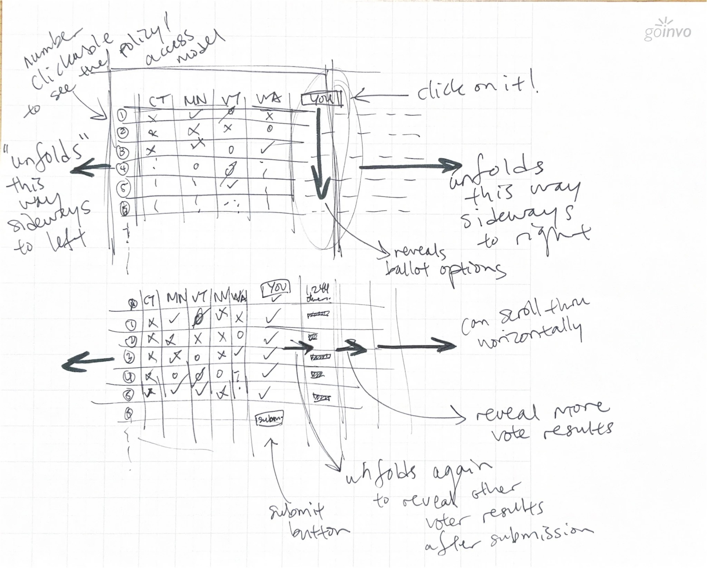
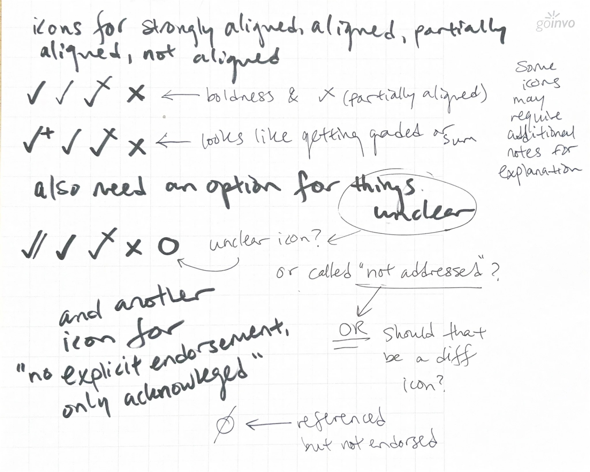
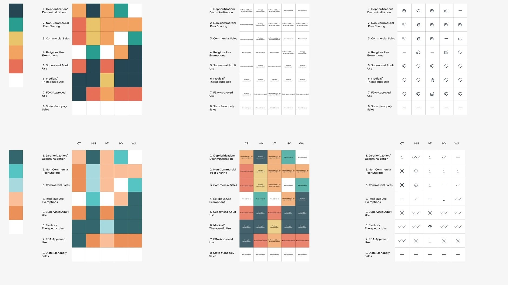

Understanding Psilocybin
An open-source, interactive matrix that lays out the eight policy models U.S. states are using to legalize or regulate psilocybin, from decriminalization to state-run sales, and shows where five states that have published official reports stand on each. I designed and built it in four weeks during my internship at GoInvo, a healthcare design studio, as the newest entry in its series of plain-language public health explainers. The goal was a page a legislator, clinician, or curious voter could read at a glance without the comparison losing its accuracy.
- My role
- UI designer and front-end developer
- Timeline
- July 2025, four weeks
- Context
- Summer 2025 internship, GoInvo (healthcare design studio)
- Team
- GoInvo studio team (add who directed the project and who did the policy research)
- Methods
- Reading state reports and a design-considerations brief, sketching, low-fidelity prototyping, iterative Figma exploration of grids, color, type, and icons, hand-coded front end
- Project site
- understandingpsilocybin.org ↗
- Tools
- Figma, HTML and CSS, JavaScript, Three.js, GitHub Pages
- Data
- Official state reports from Connecticut (2023), Minnesota (2024), Nevada (2024), Vermont (2024), and Washington (2023), the RAND Corporation’s Current Models of Psilocybin Regulation (2023), and BrainFutures’ Psychedelic Pathways report (2023). Source code on GitHub ↗
What were we trying to find out?
How do you let someone compare eight policy models across several states at a glance, without flattening the real differences between “endorsed,” “supported,” and “mixed”? The data was a handful of long government reports. The design problem was compression without distortion.
Why this mattered
States are moving on psilocybin faster than the public conversation about it. Several have convened task forces and working groups and published their findings, but each report is long, each uses its own vocabulary, and none of them lines up against the others. A legislator in a state that has not acted yet has no easy way to see what the states ahead of them recommended.
GoInvo had already built plain-language explainers for coronavirus, Zika, and Ebola. This one extended the series into policy. The studio’s framing material included a design-considerations brief for state-level psychedelic legislation, organized around Bardach’s Eightfold Path to policy analysis, which gave me the question list a legislator would actually be working through: what problem the law solves, what the evidence shows, which models of access are on the table, and who bears the trade-offs.
The audience was deliberately broad: policy staff, clinicians, advocates, and voters. That ruled out jargon and ruled in a design that explains itself.
How I approached it, and why
Four weeks is short, so the process was front-loaded with cheap exploration: paper first, then many small Figma variants, then code only once the matrix form had settled. The content itself, the eight models and each state’s position, came from close reading of the reports.
| Method | Why this method | What it gave me |
|---|---|---|
| Reading the source reports | The matrix is only as trustworthy as its cells. Each state’s stance on each model had to be traced to a specific recommendation in a specific report. | The eight-model taxonomy and a defensible label for every cell, including “N/A” where a report never addressed a model. |
| Sketching and low-fi prototyping | The first question was the shape of the thing: a table, a brochure that unfolds, a page with reveals. Paper let me try the form before committing to layout. | Two early concepts, including an unfolding matrix with a “you” column where visitors could vote. See Process for why that was cut. |
| Iterative Figma exploration | With the form fixed, the variables were grid, color system, typography, and whether cells should carry icons, words, or both. Laying dozens of variants side by side made the comparison honest. | A board of alternatives that settled the final choices: words over icons, a light five-color system, a typeface that stays readable at small sizes. |
| Hand-coded front end | GoInvo publishes its explainers as open source on GitHub Pages, so the page needed to be plain HTML, CSS, and JavaScript that anyone could fork. | A static site with a responsive matrix, a mobile layout that restacks each model with its five states, and one small Three.js flourish. |
What I actually did
-
Getting oriented
Week 1I read the five state reports and the RAND and BrainFutures reviews and worked out each state’s position on each model. The hard part was not finding the positions but deciding how to label them consistently when one report says “recommend,” another “support,” and a third describes a model without taking a stance.
-
Sketching the form
Week 1 to 2My first sketches treated the matrix as something that unfolds: click a model and the row opens sideways to reveal ballot options and more states, like a wide brochure. One version added a “you” column so visitors could record their own position, submit, and then see how others had voted. Neither the unfolding nor the voting survived. The finished page is a single matrix that reads in one glance, which was the brief: easy to read and compare without sacrificing accuracy.
-
Icons versus words
Week 2I spent a page of sketches on an icon system: checks of different weights for strongly aligned, aligned, partially aligned, and not aligned, a circle for “unclear” or “not addressed,” a struck circle for “referenced but not endorsed.” My own notes on the sketch say it: the marks “look like getting graded,” and some would need extra notes to explain. Words in the cell with a background color behind them did the job with nothing to decode.
-
Figma rounds
Week 2 to 3Dozens of grid variants side by side: dark and light themes, saturated and muted palettes, cells with labels and cells with icons, different header treatments. The light palette won for legibility and for matching the rest of GoInvo’s explainer series, and a neutral white cell for “N/A” kept the eye on the states that had actually spoken.
-
Building it
Week 3 to 4I coded the page by hand: the matrix as a desktop grid and a restacked mobile layout, a references section linking every report as a PDF, a “help us make this real” call for feedback and funding, and a small 3D megaphone next to the title rendered in Three.js. It shipped as v0.1 to understandingpsilocybin.org, open source under Creative Commons Attribution.




What I learned
Words beat icons when the categories are not ordinal
“Endorsed,” “Supported,” “Mixed,” and “Opposed” are not points on one scale, and “N/A” is not a lower score. Check marks of varying weight implied a ranking the reports did not make; a word with a color behind it did not.
Interaction has to earn its place
The unfolding brochure and the voting column were the most interesting ideas in the sketches and the first things cut. Each one asked the reader to do something before they could see the comparison, which was the whole point of the page.
“Not addressed” is information
Leaving N/A cells white, rather than hiding them or filling them in, shows where the states ahead have been silent. For a legislator that gap is as useful as any endorsement.
Consistency is a sourcing problem
The design settled quickly; the labels took longest. Agreeing on what counts as “supported” versus “endorsed” across five differently written reports was the real editorial work, and it is the part a reader never sees.
Where it landed
Understanding Psilocybin is live at understandingpsilocybin.org ↗ as an open-source GoInvo project, with the code on GitHub ↗. It covers eight policy models and five states and is framed as v0.1, with an open call for feedback, funding, and collaborators to grow it into a comprehensive U.S. report. The design decisions carry over to the next states that publish: a new column, the same five labels.
Looking back
What worked
Front-loading the cheap exploration. Paper and Figma absorbed the bad ideas so that the code only had to be written once, and laying variants side by side made the choice between icons and words obvious instead of argued.
Limitations
Five states and a four-week window. The matrix reflects the reports as published, so it ages as states act, and it has not been evaluated with its intended readers.
What I’d study next
Whether a comparison like this changes how policy staff read the underlying reports, and how to represent uncertainty in a cell honestly when a report is ambivalent rather than silent. Both questions follow me into my work on explanation and decision support in clinical settings.